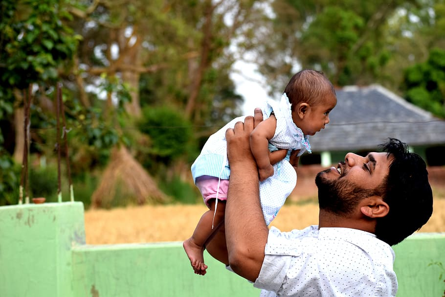

Our Reviews

Prashant
Exceptional Care from the Nephrology Department.
I cannot speak highly enough of the Nephrology Department at Bright HealthCare. From the moment I walked in, the entire team—from the front desk staff to the specialist doctors—was attentive, compassionate, and extremely knowledgeable. Dr. Pankaj and the nephrology team took the time to explain every aspect of my condition and treatment plan in a way that was easy to understand. Their patient-centered approach made me feel involved and supported every step of the way.
Suhail
I am deeply grateful for the exceptional care
I received very well care from the Cardiologist Department. From my initial consultation through treatment and follow-up, every member of the team demonstrated professionalism, compassion, and a commitment to excellence. Dr. V.K Goyal was not only highly skilled but also took the time to listen, explain, and reassure me during a very stressful time. Their expertise in diagnosing and managing my heart condition gave me complete confidence that I was in the best hands possible.

Pramod
The Dentistry Department exceeded all expectations.
Dr. Rida was incredibly gentle, thorough, and made sure I felt comfortable during every step of my treatment. Whether it was a routine cleaning, cavity filling, or more complex work, the quality of care was exceptional. The department was clean, modern, and equipped with the latest technology. I truly appreciate how they prioritize patient education and preventative care. Highly recommended for anyone looking for expert dental care with a human touch

Amit
Urology Department – Professional, Respectful, and Highly Skilled
The Urology team provided outstanding care during a very personal and sensitive health issue. Dr. Riyaz took the time to explain my condition clearly and compassionately, and the entire process—from diagnosis to treatment—was handled with professionalism and discretion. The staff made me feel comfortable and supported throughout. Their expertise and empathy made a difficult experience much easier to navigate. Truly top-tier urological care.
Pathology Department – Accurate, Timely, and Trusted Diagnostics
The Pathology Department plays a vital role behind the scenes, and their efficiency and accuracy are truly commendable. Every test result I received was delivered promptly and explained clearly by my doctor, thanks to the detailed reporting by the pathology team. Their work provided the foundation for timely and effective treatment decisions. The lab facilities are the professionalism of the staff is evident. A dependable and essential part of the hospital’s outstanding care network.

Rafi
Excellent Care at Bright HealthCare's Pediatrics Department
recently i visit Bright HealthCare's Pediatrics Department. As a parent, nothing is more important than your child’s health—and trusting someone else with that responsibility is never easy. But from the moment we walked into the Pediatrics Department, we felt an overwhelming sense of comfort, care, and genuine compassion. Dr. Dinesh and the entire team treated my child not just as a patient, but as a person—with kindness, patience, and warmth. Every nurse, technician, and staff member was gentle and reassuring, turning what could have been a frightening experience into one filled with calm, care, and even smiles.